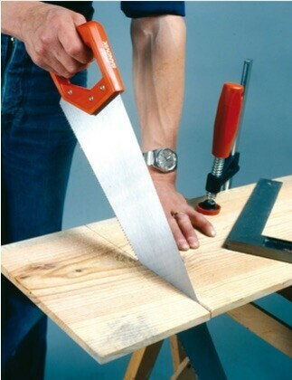
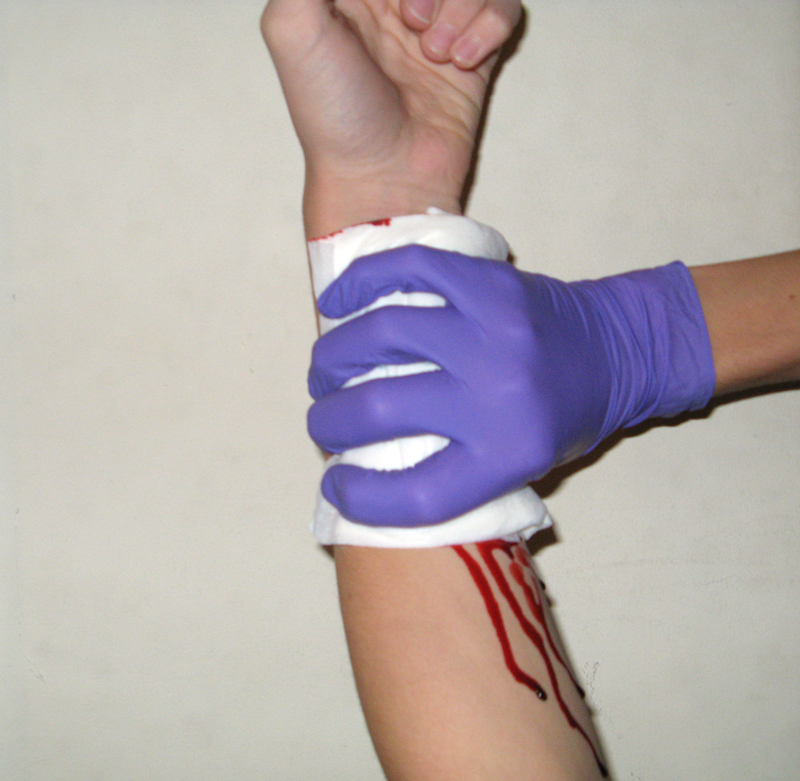
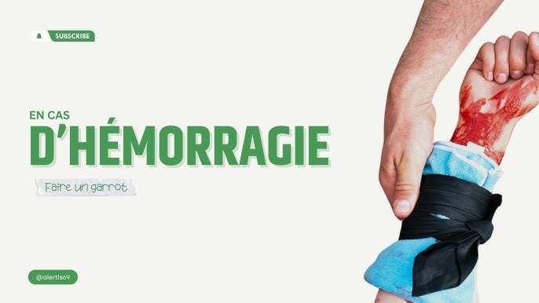

Une hémorragie est une perte de sang prolongée qui provient d'une plaie ou d'un orifice naturel et qui ne s'arrête pas spontanément. Elle imbibe un mouchoir de tissu ou de papier en quelques secondes.
⚠️ Un simple saignement qui s'arrête tout seul (écorchure, éraflure) n'est PAS une hémorragie.
Une perte de sang importante peut entraîner une détresse circulatoire puis un arrêt cardiaque si elle n'est pas stoppée rapidement.
Le sang coule abondamment. Parfois masqué par un vêtement épais (blouson, manteau) — il faut écarter les vêtements pour constater.
Le sauveteur doit agir immédiatement : chaque seconde compte. Comprimer d'abord, alerter ensuite (ou en même temps si un témoin est disponible).
Ne pas porter les mains au visage (yeux, bouche)
Ne pas manger tant que les mains ne sont pas lavées
Retirer rapidement les vêtements souillés
Se laver les mains et les zones souillées · Se désinfecter
Tu as une plaie ouverte, une coupure, ou une projection de sang sur le visage ou les muqueuses → consulter un médecin rapidement.
Il ne peut être posé que si la compression manuelle a déjà arrêté le saignement. Si ça saigne encore, on recomprime. Une fois l'alerte donnée, on recomprime.
Impossible aussi si la plaie est au cou, tête, thorax ou abdomen.
Sueurs abondantes · sensation de froid intense · pâleur · perte de connaissance → rappeler le 15 ou le 18 et pratiquer les gestes qui s'imposent.

🪚 La situation

✊ Compression directe

🩹 Pansement compressif
Points clés à vérifier :
① La zone a-t-elle été sécurisée (scie écartée) ? ② La compression a-t-elle été immédiate, forte et continue ? ③ La victime a-t-elle été allongée ? ④ Le pansement compressif a-t-il été posé seulement après arrêt du saignement ? ⑤ L'appel au 15 a-t-il été fait avec les bonnes informations ? ⑥ Les signes d'aggravation ont-ils été surveillés ?
Point de confusion fréquent : certains élèves voudront chercher un corps étranger dans la plaie — rappeler que la scie a raté la main, la plaie est nette et sans corps étranger. On ne doit pas fouiller la plaie.
Question de prévention : Quels équipements de protection aurait pu porter M. Martin ? (gants anti-coupure, lunettes de protection, maintenir la pièce avec un étau plutôt qu'avec la main)